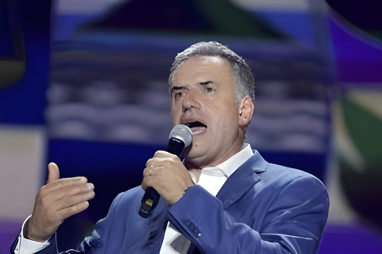

Élu en novembre 2024 avec 49,8 % des voix au second tour, Yamandú Orsi incarne le retour de la gauche uruguayenne au pouvoir après cinq ans d'alternance. Ancien maire de Canelones et héritier politique de José Mujica, il gouverne un Uruguay réputé pour sa stabilité institutionnelle mais confronté à des tensions sociales persistantes et à un contexte régional incertain.
L'Uruguay a connu entre 2020 et 2025 une parenthèse de centre-droit sous la présidence de Luis Lacalle Pou, qui avait interrompu quinze ans de gouvernance du Frente Amplio. Le retour d'Orsi au pouvoir en mars 2025 s'effectue dans un pays économiquement stable mais socialement tendu : le coût de la vie a fortement progressé, les inégalités se sont légèrement creusées, et la question sécuritaire — avec une hausse des homicides liée aux trafics de drogue — est devenue centrale dans le débat public.
Orsi hérite d'un État solide, d'institutions reconnues pour leur transparence (l'Uruguay figure régulièrement parmi les pays les moins corrompus d'Amérique latine) et d'une économie bien intégrée aux marchés internationaux. Mais il doit aussi composer avec un Parlement fragmenté où le Frente Amplio ne dispose pas de majorité absolue, ce qui l'oblige à une gestion par consensus.
Orsi a annoncé dès sa campagne une politique de continuité progressiste sans rupture radicale. Ses priorités affichées : renforcement des politiques sociales (accès au logement, santé mentale, petite enfance), relance des investissements publics dans l'éducation, et réforme fiscale modérée visant à corriger les inégalités sans altérer le climat des affaires.
Sur le plan économique, Orsi maintient le cap de la responsabilité budgétaire hérité à la fois des gouvernements Vázquez et Lacalle Pou. L'Uruguay bénéficie d'une note de crédit investment grade depuis 2012 — une rareté en Amérique du Sud —, que le gouvernement entend préserver. La croissance, portée par l'agro-industrie, le secteur technologique (Montevideo s'est imposée comme hub numérique régional) et le tourisme, reste modeste mais régulière.
Premier tour : Orsi (FA) arrive en tête avec 43,9 %. Álvaro Delgado (Partido Nacional) obtient 26,8 %. Ballottage inédit dans un paysage politique fragmenté.
Second tour : Orsi l'emporte avec 49,8 % contre 45,9 %. Victoire dans les départements de l'intérieur du pays, mais défaite à Montevideo — résultat surprenant pour un candidat de gauche.
Investiture. Orsi forme un gouvernement de coalition réunissant les principales tendances du Frente Amplio. Mario Bergara prend la tête du ministère de l'Économie.
Présentation du budget quinquennal. Hausse de 12 % des dépenses sociales, préservation des équilibres fiscaux. Débats parlementaires tendus sur la fiscalité du capital.
Décès de José Mujica. Deuil national. Orsi rend un hommage appuyé à son mentor, dont il s'était toujours réclamé, ravivant le débat sur l'héritage du « Pepe ».
Crise sécuritaire : une série de règlements de compte liés aux narcotrafics à Montevideo relance le débat sur la sécurité publique. Orsi annonce un plan de renforcement policier ciblé.
Un an de gouvernement. Popularité d'Orsi autour de 48–50 %. Tensions au sein du Frente Amplio entre l'aile réformiste modérée et la gauche plus radicale.
L'Uruguay a longtemps fait figure d'exception en Amérique latine en matière de sécurité publique. Mais depuis le milieu des années 2010, la montée des trafics de drogue — liée notamment à la route de la cocaïne transitant par le Río de la Plata — a entraîné une hausse sensible des homicides, atteignant un pic de 11,8 pour 100 000 habitants en 2023. Ce chiffre reste modeste à l'échelle continentale, mais constitue un choc pour une société uruguayenne attachée à son image de tranquillité.
Orsi doit naviguer entre les demandes de fermeté de l'opinion publique et la tradition progressiste de son camp, historiquement méfiant à l'égard de l'inflation sécuritaire. Son plan de février 2026, articulé autour de la prévention, du renseignement policier et d'une coordination accrue avec l'Argentine et le Brésil, cherche à éviter le piège de la surenchère répressive.
| Indicateur | 2020 | 2023 | 2026 (prév.) |
|---|---|---|---|
| Homicides / 100 000 hab. | 9,5 | 11,8 | ~10,5 |
| Taux de pauvreté | 10,9 % | 11,3 % | ~10,8 % |
| Croissance PIB | -6,1 % | +1,8 % | +3,2 % |
| Chômage | 10,5 % | 8,6 % | 5,5 % |
Sur la scène internationale, Orsi a adopté une posture de multilatéralisme actif, cherchant à renforcer les liens de l'Uruguay avec l'Union européenne — l'accord de libre-échange UE-Mercosur, signé en 2024 sous Lacalle Pou, entre progressivement en vigueur — tout en maintenant des relations équilibrées avec la Chine, principal débouché des exportations agricoles uruguayennes (soja, viande bovine, cellulose).
La relation avec l'Argentine voisine reste complexe : les tensions liées au différend sur le fleuve Uruguay et à la concurrence des zones franches (notamment Colonia del Sacramento face à Buenos Aires) se mêlent à une coopération indispensable sur la sécurité et la mobilité des personnes. Le retour de Milei en Argentine a créé une asymétrie idéologique inédite entre les deux pays, sans toutefois déboucher sur de véritables frictions diplomatiques.
« L'Uruguay ne sera jamais grand par sa taille, mais il peut être grand par la qualité de sa démocratie. »
— Yamandú Orsi, discours d'investiture, 1er mars 2025« Mujica nous a appris que la politique pouvait être autre chose que la gestion du pouvoir. Nous avons maintenant la responsabilité de le prouver. »
— Orsi, hommage à José Mujica, septembre 2025À un an de gouvernement, Orsi incarne une gauche latinoaméricaine qui a tiré les leçons des erreurs passées : prudence budgétaire, respect des institutions, refus du populisme. L'Uruguay reste une démocratie libérale solide, un État de droit envié dans la région, et un laboratoire de politiques sociales progressistes. Mais les défis sont réels — sécurité, inégalités, vieillissement de la population, adaptation au changement climatique — et la fragmentation politique exige du gouvernement une habileté parlementaire que ses prédécesseurs n'avaient pas toujours dû exercer. Le pari d'Orsi : prouver qu'un progressisme raisonnable et responsable peut encore convaincre dans une Amérique latine de plus en plus tentée par les extrêmes.
Elegido en noviembre de 2024 con el 49,8 % de los votos en segunda vuelta, Yamandú Orsi encarna el regreso de la izquierda uruguaya al poder tras cinco años de alternancia. Exintendente de Canelones y heredero político de José Mujica, gobierna un Uruguay reconocido por su estabilidad institucional pero enfrentado a tensiones sociales persistentes y a un contexto regional incierto.
Uruguay vivió entre 2020 y 2025 un paréntesis de centroderecha bajo la presidencia de Luis Lacalle Pou, que interrumpió quince años de gobierno del Frente Amplio. El regreso de Orsi al poder en marzo de 2025 se produce en un país económicamente estable pero socialmente tenso: el costo de vida ha aumentado considerablemente, las desigualdades se han agudizado levemente, y la cuestión de la seguridad —con un alza de homicidios vinculados al narcotráfico— se ha vuelto central en el debate público.
Orsi hereda un Estado sólido, instituciones reconocidas por su transparencia (Uruguay figura regularmente entre los países menos corruptos de América Latina) y una economía bien integrada en los mercados internacionales. Pero también debe gestionar un Parlamento fragmentado donde el Frente Amplio no dispone de mayoría absoluta, lo que lo obliga a una gestión por consenso.
Orsi anunció desde su campaña una política de continuidad progresista sin ruptura radical. Sus prioridades declaradas: fortalecimiento de las políticas sociales (acceso a la vivienda, salud mental, primera infancia), relanzamiento de las inversiones públicas en educación y una reforma fiscal moderada orientada a corregir las desigualdades sin alterar el clima de negocios.
En materia económica, Orsi mantiene el rumbo de responsabilidad presupuestaria heredado tanto de los gobiernos Vázquez como de Lacalle Pou. Uruguay cuenta con calificación crediticia de grado inversor desde 2012 —una rareza en América del Sur— que el gobierno pretende preservar. El crecimiento, impulsado por la agroindustria, el sector tecnológico (Montevideo se ha consolidado como hub digital regional) y el turismo, sigue siendo modesto pero sostenido.
Primera vuelta: Orsi (FA) lidera con el 43,9 %. Álvaro Delgado (Partido Nacional) obtiene el 26,8 %. Ballotage en un escenario político fragmentado.
Segunda vuelta: Orsi gana con el 49,8 % frente al 45,9 %. Victoria en los departamentos del interior del país, pero derrota en Montevideo, resultado sorprendente para un candidato de izquierda.
Asunción. Orsi forma un gobierno de coalición que reúne las principales corrientes del Frente Amplio. Mario Bergara asume el Ministerio de Economía.
Presentación del presupuesto quinquenal. Aumento del 12 % en el gasto social, mantenimiento de los equilibrios fiscales. Debates parlamentarios tensos sobre la fiscalidad del capital.
Fallecimiento de José Mujica. Duelo nacional. Orsi rinde un emocionado homenaje a su mentor, reabriendo el debate sobre el legado del "Pepe".
Crisis de seguridad: una serie de ajustes de cuentas vinculados al narcotráfico en Montevideo reactiva el debate sobre la seguridad pública. Orsi anuncia un plan de refuerzo policial focalizado.
Un año de gobierno. Popularidad de Orsi en torno al 48–50 %. Tensiones dentro del Frente Amplio entre el ala reformista moderada y la izquierda más radical.
Uruguay ha sido durante mucho tiempo una excepción en América Latina en materia de seguridad pública. Pero desde mediados de la década de 2010, el auge del narcotráfico —vinculado especialmente a la ruta de la cocaína que transita por el Río de la Plata— ha generado un aumento sensible de los homicidios, alcanzando un pico de 11,8 por cada 100 000 habitantes en 2023. Esta cifra es modesta en el contexto continental, pero supone un shock para una sociedad uruguaya apegada a su imagen de tranquilidad.
Orsi debe navegar entre las demandas de firmeza de la opinión pública y la tradición progresista de su sector político, históricamente receloso de la inflación punitiva. Su plan de febrero de 2026, articulado en torno a la prevención, la inteligencia policial y una mayor coordinación con Argentina y Brasil, busca evitar la trampa de la escalada represiva.
| Indicador | 2020 | 2023 | 2026 (prev.) |
|---|---|---|---|
| Homicidios / 100 000 hab. | 9,5 | 11,8 | ~10,5 |
| Tasa de pobreza | 10,9 % | 11,3 % | ~10,8 % |
| Crecimiento PIB | -6,1 % | +1,8 % | +3,2 % |
| Desempleo | 10,5 % | 8,6 % | 5,5 % |
En la escena internacional, Orsi ha adoptado una postura de multilateralismo activo, buscando fortalecer los vínculos de Uruguay con la Unión Europea —el acuerdo de libre comercio UE-Mercosur, firmado en 2024 bajo Lacalle Pou, entra progresivamente en vigor— mientras mantiene relaciones equilibradas con China, principal destino de las exportaciones agrícolas uruguayas (soja, carne bovina, celulosa).
La relación con la Argentina vecina sigue siendo compleja: las tensiones vinculadas a la disputa en torno al río Uruguay y a la competencia de las zonas francas se mezclan con una cooperación indispensable en materia de seguridad y movilidad de personas. El regreso de Milei en Argentina ha creado una asimetría ideológica inédita entre los dos países, sin que ello haya derivado en fricciones diplomáticas significativas.
« Uruguay nunca será grande por su tamaño, pero puede serlo por la calidad de su democracia. »
— Yamandú Orsi, discurso de asunción, 1 de marzo de 2025« Mujica nos enseñó que la política podía ser algo distinto a la gestión del poder. Ahora tenemos la responsabilidad de demostrarlo. »
— Orsi, homenaje a José Mujica, septiembre de 2025A un año de gobierno, Orsi encarna una izquierda latinoamericana que ha aprendido de los errores del pasado: prudencia presupuestaria, respeto institucional, rechazo al populismo. Uruguay sigue siendo una democracia liberal sólida, un Estado de derecho envidiado en la región y un laboratorio de políticas sociales progresistas. Pero los desafíos son reales —seguridad, desigualdades, envejecimiento de la población, adaptación al cambio climático— y la fragmentación política exige del gobierno una habilidad parlamentaria que sus predecesores no siempre debieron ejercer. La apuesta de Orsi: demostrar que un progresismo razonable y responsable puede aún convencer en una América Latina cada vez más tentada por los extremos.